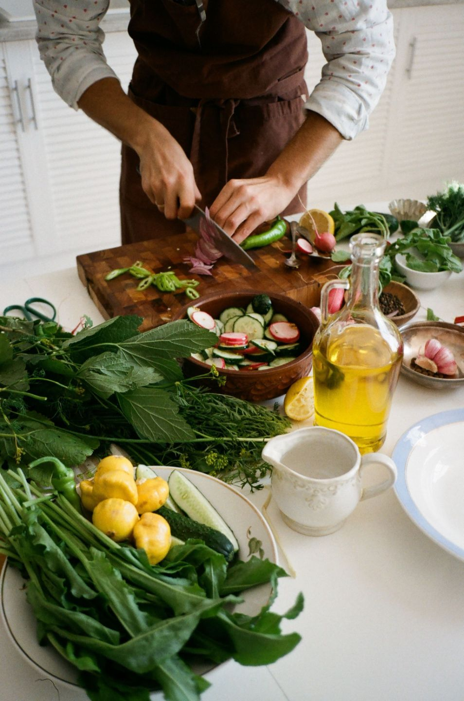

Monthly每月計劃
$68 a month每月
- Full access to each month's content and live Q&A
- Private community
- Cancel any time
- 每月內容及直播問答
- 私人社群
- 可隨時取消
Year-round coaching and a Cantonese-speaking community for women over 40 who want to balance hormones, manage blood sugar and build habits that last.
全年健康指導及粵語互動社群，專為40歲以上、想平衡荷爾蒙、管理血糖並建立持久習慣的女性而設。
One focus a week, so there's always a clear next step and nothing piles up.
每週一個重點，讓你每一步都清楚，不會越積越多。
Reflection and coaching to start the month focused.
透過反思與指導，以清晰的方向開始新一個月。
One practical strategy on nutrition, movement, stress or sleep.
一個關於營養、運動、壓力或睡眠的實用策略。
Checklists and recipes that make the topic easy to use at home.
清單與食譜，讓你在家輕鬆實踐。
Ask Sosan anything, including what you read online or heard from AI.
向 Sosan 提問，包括你在網上讀到或從 AI 聽到的內容。

Both plans include everything above. Cancel any time.
兩個計劃均包括以上所有內容，可隨時取消。
$68 a month每月
$680 a year每年
Thank you Sosan for spending so much time and putting so much thoughts in designing this program… I don't feel lonely any more.
I learned a lots in this program (liver knowledge, habits of healthy lifestyle, and try a lots of new veggies/foods!)
Sosan is great coach and a really good teacher.
You'll get an email with your own login to the members' site, where every lesson, seminar and recipe is kept, plus an invitation to the private community group.
你會收到一封附有個人登入資料的電郵，所有課堂、講座和食譜都存放在會員網站內，同時會獲邀加入私人社群。
Every live session is recorded and added to your library, so you can watch it whenever you like.
所有直播都會錄影並放入你的資料庫，你可以隨時重溫。
Yes. Monthly members are charged each month on the date they joined, and annual members once a year.
會。每月會員會在加入日期每月扣款，年度會員則每年扣款一次。
Email info@simplysosan.com at least 7 days before your next charge. Annual members can get a refund within 30 days of joining.
請在下次扣款前最少7天電郵 info@simplysosan.com。年度會員可在加入後30天內申請退款。
Email info@simplysosan.com with your questions and Sosan's team will help you decide.
請將你的問題電郵至 info@simplysosan.com，Sosan 的團隊會協助你作決定。